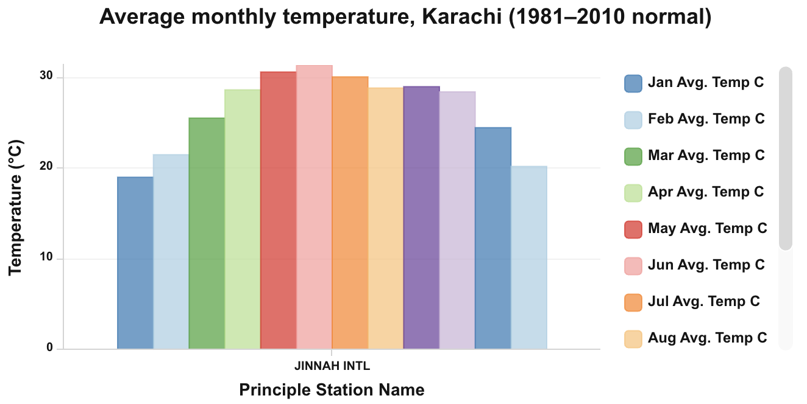
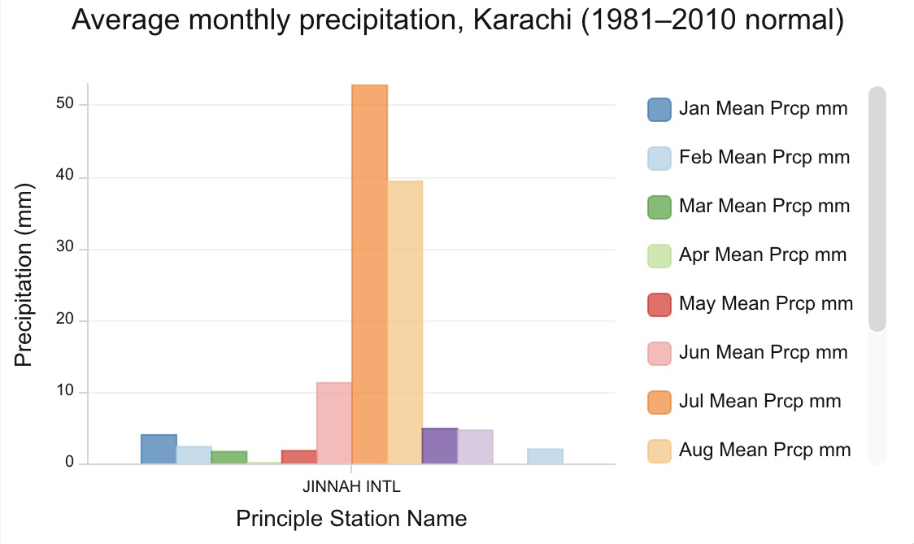

Week 02 · September 2026
Climate Normals
The question
How does the peak rainfall month compare to the rainfall during the rest of the year in Karachi, Pakistan?
The data
The layer used is World Historical Climate - Monthly Averages for GHCN-D Stations for 1981 - 2010 published by Esri from NOAA NCEI data (GHCN-Daily v3.24, Menne et al. 2012). It was opened on September 10th. The layer can be accessed at this link: https://nyuds.maps.arcgis.com/home/item.html?id=ed59d3b4a8c44100914458dd722f054f&sublayer=0#overview
The method
The location used was Jinnah International Airport, Karachi's airport which is the closest and only station near Lyari Town. To filter this station the expressions used were: GHCN-D ID starts with PK AND GHCN-D ID is PKM00041780. I charted the average monthly temperatures as well as the average monthly precipitation. These values were aggregated from 1981-2010.


What I found
1. It is warmest in the sahara desert and middle east reigon. That is one of the dry belts. There are wet belts in the Chinese subcontinent, Oceania, as well as the Carribean to the Amazon rainforest. 2. The reigonal pattern is quite similar with a majority of readings appearing dark red, then orange, and one or two in the yellow. These are spread out geographically. 3. Rain falls during the hot season. This can tell us that Karachi sits in a BWh or Hot Desert climate. In the summer it expereinces a monsoon season, typically right after the hottest time of the year. 4. Karachi is the odd one out with the rest of the major cities in Pakistan having a consistently humid climate. Northern cities recieve consistent rainfall which is in direct opposition to Karachi's exclusively rainy summer. Since its on the coast, it recieves monsoons that build over the Indian subcontinent each summer. The rest of the year, Karachi is extremely dry, a factor that makes the city even less able to deal with heavy monsoon rains due to dried out ground which struggles to absorb water. 5. It's hard to view precipitation clearly on the map. The main story is average temperature, and the color of points should not be mistaken for precipitation measures as well.
What this does not show
This map does not show the specific weather patterns in the Lyari Town Neighborhood due to data collection occuring at the airport, which is slightly removed from the city.
AI use: AI-assisted for finding weather patterns across pakistan and the larger reigon around it. I verified by visiting websites that contained metorological data.